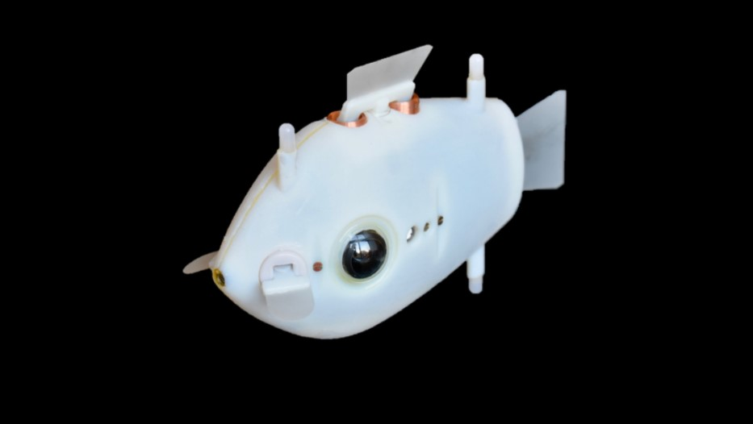

Robotic swarm swims like a fish
Leah Burrows | Research | Innovation
Schools of fish exhibit complex, synchronized behaviors that help them find food, migrate, and evade predators. No one fish or sub-group of fish coordinates these movements, nor do fish communicate with each other about what to do next. Rather, these collective behaviors emerge from so-called implicit coordination — individual fish making decisions based on what they see their neighbors doing. This type of decentralized, autonomous self-organization and coordination has long fascinated scientists, especially in the field of robotics. Now, a team of researchers at Harvard’s Wyss Institute and John A. Paulson School of Engineering and Applied Sciences (SEAS) have developed fish-inspired robots that can synchronize their movements like a real school of fish, without any external control. It is the first time researchers have demonstrated complex 3D collective behaviors with implicit coordination in underwater robots. “Robots are often deployed in areas that are inaccessible or dangerous to humans, areas where human intervention might not even be possible,” said Florian Berlinger, a Ph.D. Candidate at the Wyss Institute and SEAS and first author of the paper. “In these situations, it really benefits you to have a highly autonomous robot swarm that is self-sufficient. By using implicit rules and 3D visual perception, we were able to create a system that has a high degree of autonomy and flexibility underwater where things like GPS and WiFi are not accessible.”
The fish-inspired robotic swarm, dubbed Blueswarm, was created in the lab of Wyss Associate Faculty member Radhika Nagpal, Ph.D., who is also the Fred Kavli Professor of Computer Science at SEAS. Nagpal’s lab is a pioneer in self-organizing systems, from their 1,000 robot Kilobot swarm to their termite-inspired robotic construction crew. However, most previous robotic swarms operated in two-dimensional space. Three-dimensional spaces, like air and water, pose significant challenges to sensing and locomotion. To overcome these challenges, the researchers developed a vision-based coordination system in their fish robots based on blue LED lights. Each underwater robot, called a Bluebot, is equipped with two cameras and three LED lights. The on-board, fisheye-lens cameras detect the LEDs of neighboring Bluebots and use a custom algorithm to determine their distance, direction and heading. Based on the simple production and detection of LED light, the researchers demonstrated that the Blueswarm could exhibit complex self-organized behaviors, including aggregation, dispersion, and circle formation.
Written by Charith Reddy